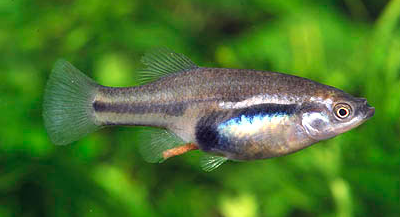

Systématique
- Ordre : Cyprinodontiformes
- Famille : Goodeidae
- Genre : Skiffia
- Espèce : S. bilineata
- Auteur : Bean, 1887

Skiffia bilineata est un petit goodeidé au corps haut et comprimé, originaire du plateau central du Mexique. Son nom spécifique bilineata fait référence aux deux lignes horizontales sombres que l'on retrouve souvent sur les flancs des femelles et des juvéniles. C'est un poisson discret mais fascinant par ses comportements sociaux.
Les femelles sont les plus grandes, atteignant 5 à 6 cm, tandis que les mâles sont plus petits, mesurant environ 4 cm. Ces derniers développent une coloration plus contrastée, avec des nageoires souvent bordées de noir ou d'un liseré clair selon les populations. Comme les autres membres du genre Skiffia, ils possèdent une morphologie typique des poissons vivant dans des eaux calmes et riches en végétation.
C'est un poisson grégaire et paisible, idéal pour un aquarium communautaire de goodeidés. Bien que les mâles puissent parader entre eux, les interactions sont rarement agressives. Ils apprécient particulièrement de "picorer" sur les plantes et le décor à la recherche de micro-organismes et d'algues.
En aquarium, Skiffia bilineata demande un bac bien planté avec des zones d'ombre, car il peut être timide s'il est maintenu en trop petit nombre ou dans un environnement trop exposé. Il est moyennement actif et occupe généralement la zone médiane du bac. Il est sensible aux variations brusques de température et à l'accumulation de nitrates.
Mode : Vivipare matrotrophe.
La reproduction est caractéristique des Goodeinae. Le mâle utilise son andropode pour la fécondation interne. La gestation dure entre 50 et 60 jours. Les alevins sont nourris in utero par des trophotaeniae.
Les portées sont petites, comptant généralement entre 10 et 20 alevins. Les jeunes naissent à une taille de 8 à 10 mm. Une particularité notable de ce genre est que les alevins naissent souvent avec des trophotaeniae encore attachées, qui se résorbent en quelques heures. Les adultes ne sont généralement pas prédateurs de leurs propres alevins si le bac offre suffisamment de mousses (Java) pour que les petits puissent se cacher initialement.
Dimorphisme sexuel : Très marqué. Le mâle possède un andropode (encoche sur la nageoire anale). Il est plus petit et sa nageoire dorsale est souvent plus développée et colorée. La femelle est plus grande, plus terne, avec les deux lignes latérales sombres bien visibles et une nageoire anale normale.
Espérance de vie : 3 à 4 ans en aquarium.
On le trouve dans le bassin du Rio Lerma, ainsi que dans le Rio Grande de Santiago. Il fréquente les eaux calmes, les étangs, les fossés et les zones littorales des lacs où la végétation aquatique (souvent des algues filamenteuses et des plantes flottantes) est dense.
Le substrat est souvent boueux ou sablonneux. Malheureusement, son habitat est gravement menacé par l'assèchement des zones humides, la pollution urbaine et l'introduction d'espèces exotiques comme les tilapias et les carpes, qui dégradent la végétation nécessaire à sa survie.
Répartition

Origine naturelle :
- Mexique : Bassin du Rio Lerma et Rio Grande de Santiago.
- Localité type : Rio Lerma, Guanajuato, Mexique.
Statut UICN : En danger (Endangered). L'espèce a disparu de nombreuses localités historiques et est très sensible aux changements de son écosystème.
Paramètres de maintenance
Température : 18 à 23 °C (Supporte mal les chaleurs prolongées au-dessus de 25 °C).
pH : 7,0 à 8,0.
GH : 10 à 25 °dGH.
Courant : Faible.
Volume conseillé : Minimum 60-80 L pour un groupe de 6 à 10 individus.
Régime alimentaire
Régime : Omnivore à tendance alguivore.
Dans la nature, il consomme des algues, du périphyton et de petits invertébrés. En aquarium, il accepte les paillettes et granulés, mais une part végétale (spiruline) est indispensable. Des distributions régulières de nourriture vivante ou congelée (daphnies, cyclops) assurent une croissance optimale et une bonne fécondité.